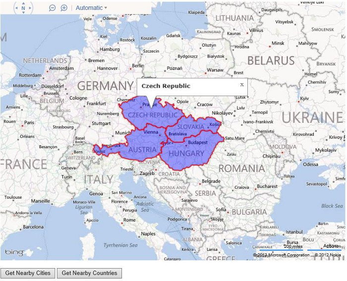
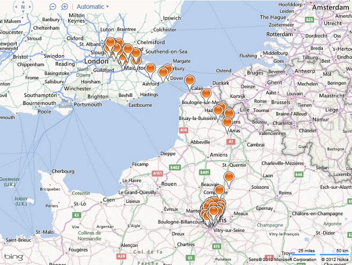

This sample shows how to create a web service that connects to Bing Maps to a database using the spatial functionality in Entity Framework 5 (EF5). This sample contains many common advance spatial search queries such as find nearby, find in polygon, find in bounding box, and find along a route. This sample builds on top of two blog post on How to Create a Spatial Web Service That Connects a Database to Bing Maps Using EF5 & Advance Spatial Queries using Entity Framework 5.
In order for this sample to work correctly you will need to porvide your Bing Maps key inside the index.html. Simply find and replace the text "YOUR_BING_MAPS_KEY" with your Bing Maps key. You will also need the following installed:
This sample includes a SQL script that creates a database with sample data.
Description
This code sample creates a REST based web service that uses Entity Framework 5 on the server side to connect to a database constaining SQL Spatial objects. This sample includes some of the most common spatial queries including; find nearby, find in polygon, find in bounding box, and find along a route. Here is a screenshot of a nearby search of countries.

Here is a screenshot of all cities that are within 10KM of the route between London, UK and Paris, FR.
